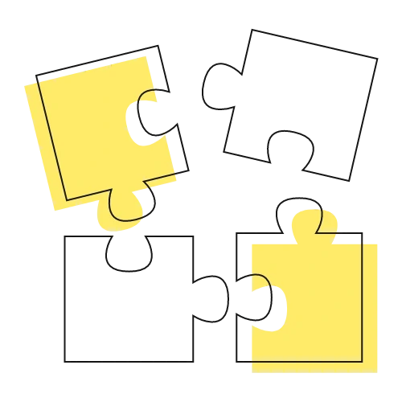

Why the name.
A misspelling
Four letters
Top to bottom
Creative D.A.D.Y is a deliberate misspelling. It is not “Daddy,” it is D.A.D.Y, and the four letters each stand for a stage of the work. We did not start with the word and work backward. We started with the way we already work and realised those four letters were already there.
Read it top to bottom. That is the order every real project moves through. Skip a stage and something breaks.
Design is intention made visible.
Not decoration
No templates
A fresh decision
Out loud
Design is the first stage because nothing else is possible without it. Design is not decoration. Design is the sum of every decision about what the user sees, what they do not, what is emphasised, what is allowed to recede. A button is not a button, it is a decision about hierarchy. A font size is not a font size, it is a decision about voice.
We reject template design for the same reason a chef rejects a frozen dinner. It is not that templates are wrong. It is that they are a pre-made decision, made by someone who does not know your business, applied to your product without apology.
At Creative D.A.D.Y, every visual decision is a fresh decision. We sketch. We explore. We throw out. We start again. We do this because design is where the brand either starts being something or starts being nothing.
Every pixel is a decision. We make the decision out loud.
Art is what craft becomes when it refuses to settle.
Art is the detail you did not ask for and then cannot imagine the product without.
Most agencies stop at design. They finish the Figma file, export the assets, hand it to the developer, and move on. We do not stop there. We move into a stage we call Art, which is the difference between work that is done and work that is considered done.
Art is the extra two hours spent on the hover state. The seventh typographic revision. The animation curve that was not in the brief. The loading state that is so well-made the user almost wants to see it again. Art is the detail the client never asked for and then cannot imagine the product without.
Art is also unprofitable in the short term. It is the reason we do not take on more than a handful of projects at a time. It is why our margins are slimmer than the studios that move fast and ship rough. And it is the reason Nielsen Norman Group research keeps proving that the invisible details are the ones that drive trust, retention, and word of mouth.
We invest in Art because over time, Art compounds. The client notices. The user notices. The next client is referred by the last client because the last client could not stop talking about the details. That is the Art dividend.
Development is rigor, quietly engineered.
Clean code is a baseline. Performance is the product.
A design that never becomes code is a PDF. A design that becomes bad code is a liability. Development is the stage where design survives contact with the browser, the device, the user on a slow 3G connection in Lahore, the screen reader in Toronto, and the CMS editor who just wants to change the hero image without breaking the layout.
We build in the stacks that fit the project. Webflow when the client needs to edit without us in the loop. Next.js and React when the product needs component architecture and server-side logic. WordPress when the content team has lived in it for a decade and no one is switching. We do not evangelise a stack. We pick the one that respects the client and the user equally.
Clean code is not a selling point. It is a baseline. What we actually invest in is the boring stuff. Caching. Image compression. Bundle size. Lighthouse scores in the high nineties. The site that loads fast is the site that converts. The site that converts is the site that funded the next quarter.
Yield is the word that keeps us honest.
If the work does not yield, the work did not work. Full stop.
Yield is the fourth word and the one that separates Creative D.A.D.Y from the rest of the studio world. Yield is the measurable return on the creative investment. The conversions the site drives. The signups the product earns. The revenue the redesign unlocks. The retention the flow improvement delivers.
Most agencies avoid this conversation. They deliver the file, invoice the client, and move on. They do not want to be on the hook for the outcome because the outcome involves variables outside their control. We understand the argument. We reject it anyway.
Here is why. If the work does not yield, the work did not work, and the client will figure that out eventually, and when they do, no amount of beautiful Figma files will bring them back. The only agencies that last are the ones whose work is still earning for clients two years after launch. Yield is how we make sure we are one of them.
Every project we take on is defined by a yield question at the start. What is the single number that needs to move, and by how much, for this project to have been worth it? We write that number down. We show the client. And we track it after launch.
The order matters.
People ask why Art is between Design and Development, and why Yield is at the end instead of at the start. The order is deliberate.

Design without Art is efficient but forgettable. Art without Design is undisciplined. Development without Design and Art is just code, which is a commodity. And yield without the first three is a dashboard full of numbers that nobody loves.
Put them in the wrong order and the work collapses. Start with yield and you optimise for a metric at the expense of the experience. Start with development and you build a beautiful engine with no one in the driver seat. Start with art and you win awards and go bankrupt.
Start with Design. Elevate to Art. Build with Development. Measure the Yield. That is the only order that holds up.
We are not for everyone.
Creative D.A.D.Y is not the right studio for every founder. We are slow by the standards of the sprint-shop agencies. We are opinionated in a way that some clients find exhausting. We do not take on projects where the brief is locked and the only job is execution. We are wrong for logo-only projects, for stationery design, for social media management, for anyone who just needs a cheap site to test an idea.
We are right for founders who care how the work looks, care how the work runs, and are willing to be measured on what the work earns. If that is you, the conversation will be short. We will know fast. So will you.
Definitely clientele.
The team were very punctual, worked well with our busy schedule and were always on top